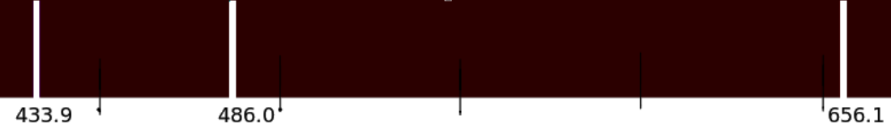
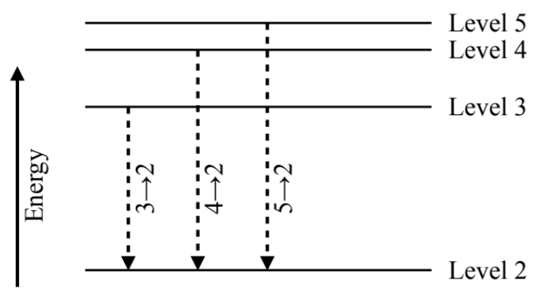
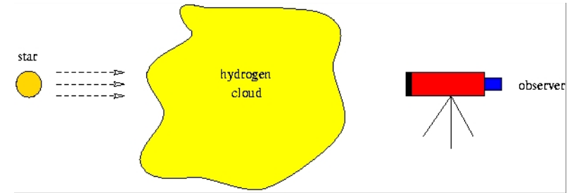
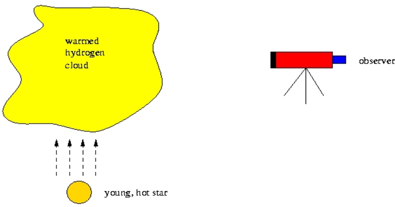

⚠️ Your name and student ID
Collaborators (if any):
Lab 2: Spectroscopy
This handout is divided into two sections: the "In-Class Activity" and "Homework".
During class, you will make measurements and record data. All of your data should be recorded in the appropriate places in the section labeled "In-Class Activity" and on the templates on the last page of the handout. In the "Homework" section, you will be asked to answer some relevant questions and perform some calculations. Please place your answers in the spaces provided. Each student must complete their own worksheet but you may work together if you wish; if you do, please list your group members’ names at the top under “collaborators.”
Completed homework questions along with the entire handout are due in class on , or earlier.
In-Class Activity
Although we usually think of objects as having a single color – such as the red, yellow and green lamps of a traffic light – most of the light that we see is actually composed of radiation at many different wavelengths. For example, the light from an ordinary light bulb appears to be white or yellow. In fact, a light bulb emits light of all colors, from red to yellow to blue, at varying intensities. The human eye senses light of different colors simultaneously. Just as a painter mixes red paint with yellow paint to get orange paint, your eye adds up all the colors of the light emitted by the bulb to form a single visual impression of color or "hue".
A spectroscope does the opposite. Instead of adding up all the light at different wavelengths to arrive at a single color, a spectroscope takes light and splits it up into its constituent wavelengths. Then the intensity of light at each frequency can be measured, either by eye or with an electronic detector.
In this lab, you will use a simple spectroscope. One end is sealed except for a very narrow slit. This slit lets light into the spectroscope and should be pointed at the light source. At the other end is a small plastic square. When you look through the square you will see the spectrum of the light spread out into various colors to the side of the slit. The numbers measure the wavelength in 100s of nm (e.g., 4 corresponds 400nm).
Viewing Spectra with your Spectroscope
N.B.: The in-class activity may be done in any order. That is, you may start with any of the 4 sections: either the "Reveal™ Light Bulb", or the "Fluorescent Light Tube", or the "Discharge Tubes", or the "Incandescent Light Bulb".
Incandescent Light Bulb
- Looking through your spectroscope, examine the spectrum of an incandescent light bulb. You should see a continuous spectrum. On the left and right sides of the spectrum, the colors appear to fade to black. An incandescent light bulb does radiate energy in these wavelength ranges, but your eyes are not sensitive to it.
- Draw the spectrum you see on one of the templates provided at the
end of this handout. Label some of the colors that appear in it, and
shade it lighter or darker with your pencil to indicate where there is
more or less light. Label the spectrum in the blank space at the top
of the template ("incandescent light bulb"). Note the wavelengths at
the two ends (red and blue) where your eye can no longer see color.
- Shortest wavelength: nm
- Longest wavelength: nm
- Now place a stack (2-3) of the same color filters over the
spectroscope slit and observe the incandescent light source again.
Record the color of your filters and the wavelength range of the
filtered spectrum in the spaces below.
- Color of the filter:
- Shortest wavelength: nm
- Longest wavelength: nm
What is the filter doing to the light to make the spectrum appear different than the unfiltered spectrum? (Note: it may help to repeatedly cover and uncover the spectroscope slit with the filter.)
Discharge Tubes
- Use the spectroscope to examine the emission spectrum of a Hydrogen (H) gas discharge tube.
- Sketch the most prominent emission lines of the gas emission spectrum on one of the templates at the end of this handout. Note the color and relative brightness (weak, medium, strong) of each line. Once you have finished these observations, draw each emission line in the spectrum and label its color. Draw thick lines to represent bright lines, and thin lines for weak lines. Label the spectrum in the provided blank space.
- Do the same measurements and sketches for two additional tubes, with different gases (He, Ne, etc.) Sketch each spectrum as accurately as you can. Label each sketch with the name of the element.
LEDs
LEDs (Light Emitting Diodes) emit light at a very narrow wavelength range, typically just one color at a time. An LED light bulb that mimics white light will combine light from several different LEDs of multiple colors. This light is not a true continuum or a black body the way an incandescent bulb is and typically has a different appearance. Cell phone and computer screens are LEDs, as are most monitors and TVs. A typical color screen uses three different LED colors plus a white LED to create each pixel. The intensity of each LED provides the overall color of the pixel.
a. Using your spectroscope, carefully examine the spectrum of your cell phone or laptop screen (this works best with a white/light colored background and brightness set to maximum). Draw the spectrum on one of the templates at the end of this handout. Label the colors and draw the distribution of light (wavelengths, width of lines) as accurately as you can. Label the spectrum at the top of the template (“LED”).
Type of LED observed (include phone or laptop brand/model):
Reveal™ Light Bulb
The Reveal™ light bulb is an incandescent light bulb made by General Electric. Just like the other incandescent light bulb whose spectrum you are observing, it contains a filament made of Tungsten (W) that, when heated (a hot solid), emits light. What makes the Reveal™ light bulb different is that GE infuses the glass surface of the bulb with the element Neodymium (Nd). The Nd atoms in the glass surface absorb some of the radiation from the W filament. The element Nd imprints a unique pattern of absorption lines on the continuous spectrum, determined by the atom's unique distribution of energy levels.
- Using your spectroscope, carefully examine the spectrum of the Reveal™ light bulb. If you look carefully, you should see that there are missing colors from the rainbow.
- Draw the spectrum you see on one of the templates provided at the end of this handout and label colors. Label the spectrum at the top of the template ("Reveal light bulb").
- Highlight the areas of the spectrum where you see absorption lines.
Homework
N.B.: Use the space provided to answer the questions. You may find it useful to refer to the lecture slides and/or Chapter 5 of your textbook. Show all your steps for full credit. Be sure to label ALL units. When turning in the homework questions, turn in the entire handout.
The following figures illustrate transitions of the electron from 3 higher levels to a lower one (5→2, 4→2, or 3→2). These transitions are the ones that produce the bright emission lines that you saw in the spectrum of hydrogen.


a. Which transition produces a photon with the highest energy?b. Which transition produces a photon with the lowest energy?
a. What is the visible wavelength range of the spectra you have drawn in class? In other words, what is the shortest wavelength (most blue or violet) and longest wavelength (most red) that you see? (Note that everyone has slightly different limits on the wavelength range that their eyes are sensitive to. Use the "nanometer" or "nm" scale on the bottom of the spectroscope template page to give your answers in nanometers.)
b. If an electronic transition produced a photon at the shortest wavelength, would that photon have a lower or higher energy than a photon at the longest wavelength?
Lines from clouds.

a. What type of spectrum (continuous, emission, or absorption) does the observer see in the figure above? Why?

b. The young, hot star in the figure above heats up the gas in the cloud. Assume that the observer can only see radiation emitted by the hydrogen cloud and cannot see the star. What kind of spectrum (continuous, emission, or absorption) does the observer see? Why?
Compare the spectrum of the LED lights to the spectrum of the incandescent light. a) Describe the differences between them. Is the LED light a true continuous spectrum? Why or why not?
What type of spectrum (continuous, emission line or absorption line spectrum) did you see for the Reveal™ light bulb? Why?